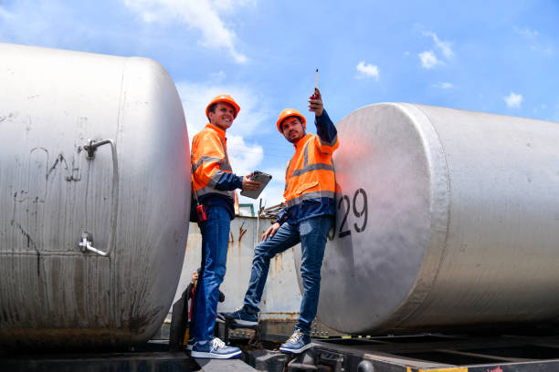
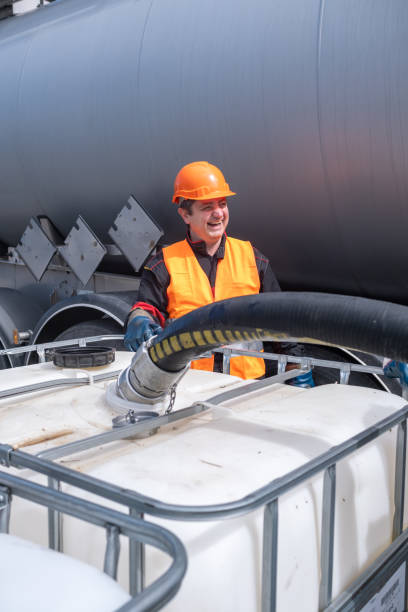
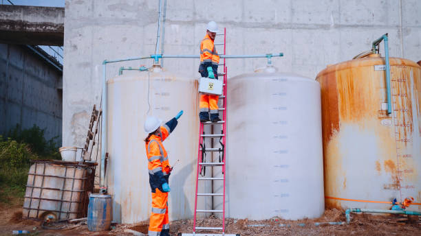
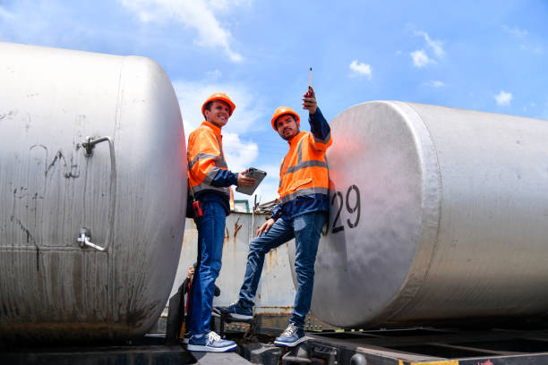
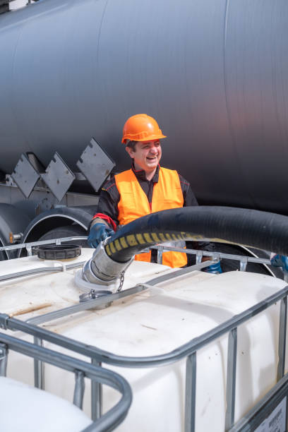
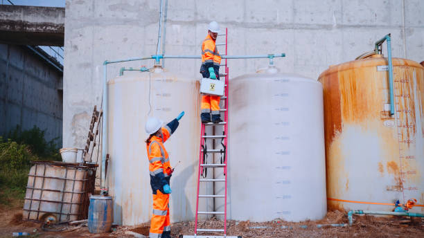

شركة تنظيف خزانات: ما الذي يميز الخدمة الاحترافية؟
اختيار شركة تنظيف خزانات ليس قرارًا شكليًا؛ إذ ترتبط جودة الخدمة مباشرةً بصحة الأسرة وجودة مياه الشرب. وتُعد خدمات تنظيف خزانات مياه وتعقيم خزانات المياه من الأعمال التي تتطلب خبرة ومعدات مناسبة ومواد آمنة.
 





معايير اختيار أفضل شركة تنظيف خزانات
من أبرز المعايير: وضوح خطوات العمل، الالتزام بمواد غير ضارة، توفر أدوات تنظيف حديثة، وتقديم ضمانات واضحة. كما أن وجود فريق مدرّب يقلل الأخطاء ويضمن نتائج مستقرة.
لماذا يُفضّل الجمع بين التنظيف والتعقيم؟
يزيل الغسيل الرواسب الظاهرة، بينما يستهدف التعقيم الميكروبات والطحالب؛ لذا فإن تنظيف خزانات مع التعقيم يحقق جودة أعلى ويحمي الخزان لفترة أطول.